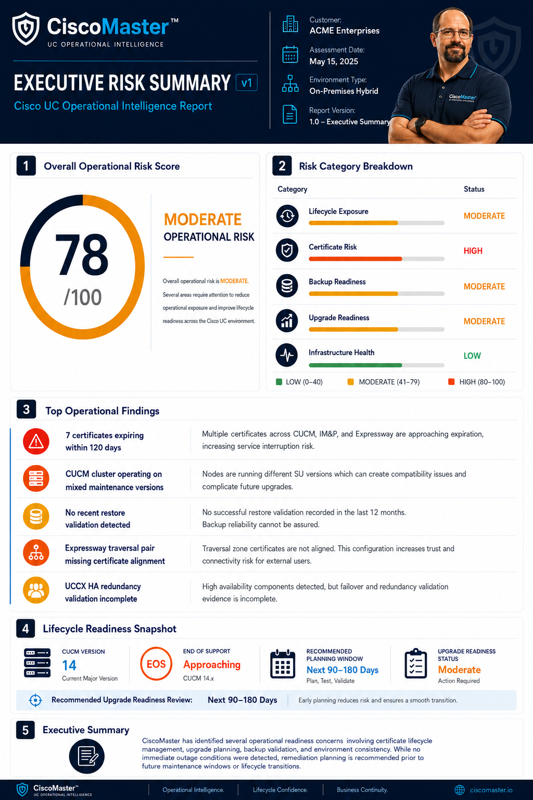

EXECUTIVE RISK SUMMARY
See what deserves attention first.
Overall operational posture, category-level risk, top findings, lifecycle readiness and prioritized executive recommendations.
CISCO UC RISK • READINESS • OPERATIONAL INTELLIGENCE
CiscoMaster turns lifecycle, configuration, recovery and security data into prioritized findings, executive-ready intelligence and a clear remediation roadmap.


WHY CISCOMASTER
Unsupported versions, untested recovery, certificate exposure, replication problems and undocumented dependencies often remain invisible until an upgrade, outage, audit or migration forces the issue.
Identify operational, lifecycle, recovery and security exposure before it becomes urgent.
Translate technical findings into clear priorities engineering and leadership can act on.
Receive practical remediation guidance instead of another report that sits on a shelf.
SEE WHAT YOU GET
CiscoMaster turns technical evidence into deliverables that engineering teams and executives can use immediately.
EXECUTIVE RISK SUMMARY
Overall operational posture, category-level risk, top findings, lifecycle readiness and prioritized executive recommendations.
LIFECYCLE READINESS
Platform versions, lifecycle status, support horizon, operational risk and specific recommendations in one clear matrix.
HOW IT WORKS
A focused process designed to reduce uncertainty without creating another consulting project to manage.
Gather the approved UC configuration, lifecycle and operational evidence needed for the selected service.
Review architecture, lifecycle, recovery, certificates, dependencies and operational exposure.
Separate informational findings from the issues that actually deserve attention.
Provide clear technical findings and executive-ready intelligence your team can use.
Turn findings into practical next actions, remediation priorities and readiness planning.
CHOOSE WHAT YOU NEED
Document it. Scan it. Assess it. Deep-dive it.
01
Understand what you have.
Best for: documentation, projects, migrations and environments that have outgrown their diagrams.
Ask About Topology Mapping →02
Find the obvious risks fast.
Best for: a fast independent look before an upgrade, audit or maintenance event.
Request a Quick Scan →03
Know exactly where you stand.
Best for: organizations that need a complete operational picture and prioritized action plan.
Request Standard Assessment →04
Build the operational blueprint.
Best for: large, multi-site or mission-critical Collaboration environments.
Discuss Enterprise Assessment →FREE UC RISK CHECKLIST
Start with the CiscoMaster UC Risk Checklist. Review lifecycle, backup, certificate, security and upgrade-readiness concerns before deciding whether you need a deeper assessment.
Get the Free Checklist
TWO WAYS TO WORK WITH CISCOMASTER
I OPERATE CISCO UC
For enterprise IT and UC teams that want to understand risk before an outage, upgrade, migration, audit or recovery event.
I PROVIDE CISCO UC SERVICES
For Cisco partners, integrators and MSPs that need trusted specialist capacity for customer delivery.
CISCOMASTER
Cisco UC topology mapping, risk assessments, upgrade readiness, recovery validation and enterprise operational reviews.